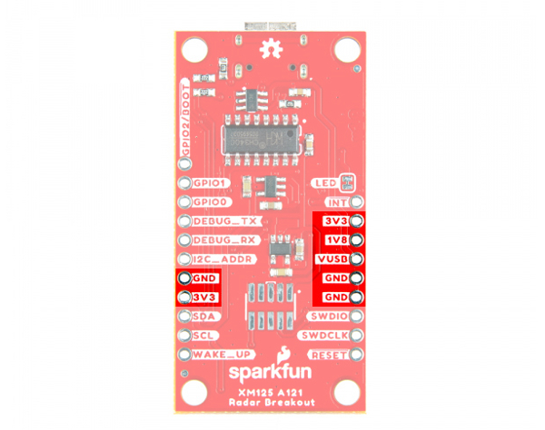
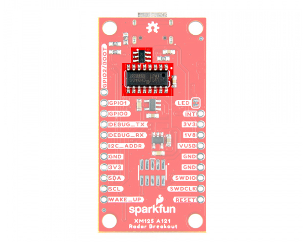
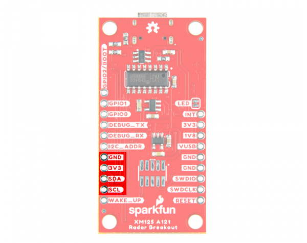
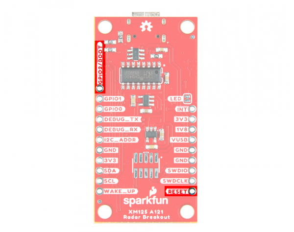
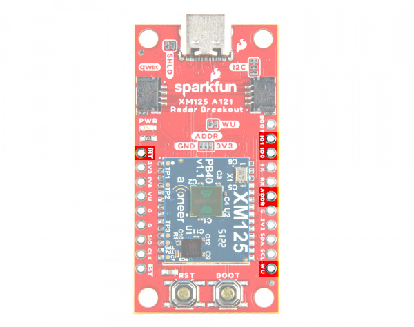
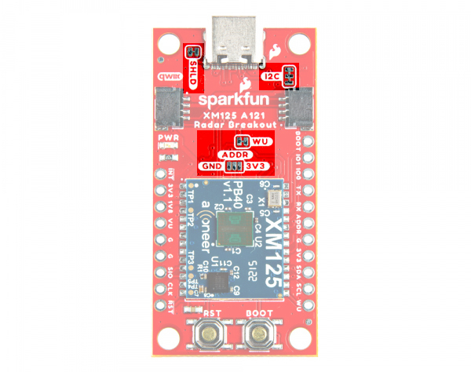
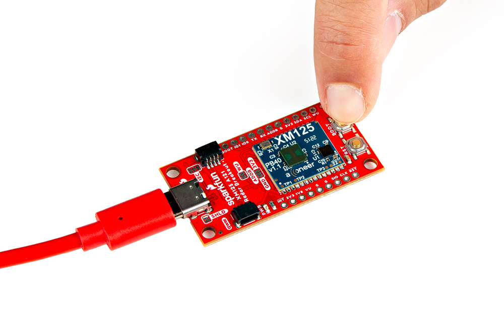

Introduction
The SparkFun Qwiic Pulsed Coherent Radar Sensor features Acconeer's XM125 module and adds powerful 60 GHz radar technology to your projects. This sensor isn't limited to surface detection; it can see through walls, cabinets, and even pockets (depending on the material), making it perfect for unique applications. Measure distances with millimeter precision, detect motion, the speed of an object, or even gestures!

The XM125 boasts an impressive range of up to 20 meters, allowing you to create long-range sensing projects. The actual measurable distance is dependent on the object size, shape, dielectric properties, and lens (e.g. water level measurements up to 20 meters with lens utilization, human presence detection up to 7 meters with lens-free utilization). Despite its power, the sensor has remarkably low in power consumption, which is ideal for battery-powered applications. The real magic lies in the sensor's ability to do more than measure distance. The XM125 can differentiate between stationary objects and moving targets using pulsed coherent radar. This means you can sense an object's presence and how fast it is moving.
In this tutorial, we'll go over the hardware and how to hookup the breakout board. We will also go over a few basic Arduino examples to get started!
Required Materials
To follow along with this tutorial, you will need the following materials at a minimum. You may not need everything though depending on what you have. Add it to your cart, read through the guide, and adjust the cart as necessary.
- 1x Reversible USB A to C Cable - 0.8m [CAB-15425]
- 1x SparkFun IoT RedBoard - ESP32 Development Board [WRL-19177]
- 1x Flexible Qwiic Cable - 100mm [PRT-17259]
- 1x SparkFun Pulsed Coherent Radar Sensor - Acconeer XM125 (Qwiic) [SEN-24540]


Tools (Optional)
You will need a soldering iron, solder, and general soldering accessories for a secure connection when using the plated through holes. You may also need a hobby knife to modify the jumpers.


Note
For advanced users, the Acconeer's XM125 Software User Guide recommends using a Segger J-Link debug probe. They list the J-Link BASE Compact or an ST-Link debugger. For users that are using the XM125 module for hobby or educational use, you can also use the Segger J-Link EDU Mini. The J-Link EDU Mini is a stripped-down, budget-friendly model of the J-Link debug probe created for educational use. Even with its reduced size, it maintains the J-Link features.
Prototyping Accessories (Optional)
For users connecting to the PTHs, you will need the following prototyping accessories. You could use IC hooks for a temporary connection depending on your setup and what you have available. Of course, you will want to the solder header pins for a secure connection. Below are a few prototyping accessories that you may want to consider.


Suggested Reading
If you aren't familiar with the Qwiic Connection System, we recommend reading here for an overview.

If you aren’t familiar with the following concepts, we also recommend checking out a few of these tutorials before continuing.


Hardware Overview
In this section, we will highlight the hardware and pins that are broken out on the SparkFun Pulsed Coherent Radar Sensor - XM125 (Qwiic). For more information, check out our Resources and Going Further for the XM125 Module and the A121 Pulsed Coherent Radar Sensor.
 |
 |
| Top View | Bottom View |
XM125 Module
The board breaks out the Acconeer XM125 module with some application circuits.
 |
| Acconeer XM125 Module |
Below are a few specifications from the datasheet.
- Acconeer XM125 Module
- A121
- 60GHz Pulsed Coherent Radar (PCR)
- Integrated Baseband, RF Front-End and Antenna in Package
- Detect Distance, Speed, Motion, and Objects up to 20 Meters***** Away
- Millimeter Precise Readings
- Low Power Consumption
- STMicroelectronics STM32L431CBY6
- 32-bit Arm® Cortex® M4 MCU
- Clock Speed: 80 MHz
- Flash: 128kB
- RAM: 68kB
- A121
*Note
The actual measurable distance is dependent on the object size, shape, dielectric properties, and lens (e.g. water level measurements up to 20 meters with lens utilization, human presence detection up to 7 meters with lens-free utilization).
For users using the XM125 module to detect objects through a material (especially for those placing the board in an enclosure), you may want to check out Acconeer's Hardware and Physical Integration Guideline PCR Sensors A111 & A121 User Guide.
Note
Due to the higher frequencies, pulsed coherent radar sensors may be regulated in certain countries. Be sure to check local regulations before use.
Power
There are a variety of power and power-related nets broken out to the USB connector, Qwiic connectors and plated through holes. 5V power from the USB C Connector or PTH is regulated down to 3.3V with the AP2112K 3.3V/600mA voltage regulator. The voltage is further regulated down to 1.8V with the RT9080 1.8V/600mA voltage regulator. The logic levels for the XM125 is 3.3V for the I/O pins.
- VU / VUSB — Power from the USB C connector's VBUS provides power to the V_BUS. The V_USB net is also connected to the edge PTH pin labeled as VU on the top of the board and VUSB on the bottom of the board. This is also connected to the input of the 3.3V voltage regulator. Make sure that power you provide to this pin does not exceed 6 volts.
- 3V3 — This connects to the 3.3V net. Both sides of the board includes a 3.3V pin (labeled as 3V3). The output of the AP2112K 3.3V voltage regulator and input of the RT9080 1.8V voltage regulator are connected to this net. 3.3V net can also be accessed through one of the Qwiic connector's pins. You should only provide a clean 3.3V power signal to those pins.
- G / GND — Of course, is the common, ground voltage (0V reference) for the system.
 |
 |
| Power from USB, Qwiic, and PTHs (Top View) |
Power from PTHs (Bottom View) |
CH340C USB-to-Serial Converter
ON the back of the board is a built-in CH340 USB-to-serial converter to connect the XM125's primary UART to a computer's USB port. This is useful for users viewing data, configuring the XM125, or updating firmware. ESD protection diodes are included between the USB C and the CH340C's USB data lines.
|  |
| TVS Diodes, and CH340 Highlighted |
UARTs
The board has two UARTs. The primary UART (not highlighted in the image below) is connected internally to the CH340C USB-to-Serial converter. There is also a debugging UART that is broken out on the edge of the board.
- TX / DEBUG_TX — TX out for debugging
- RX / DEBUG_RX — RX in for debugging
Note
To enable or disable UART logging, you will need to call the function after resetting the XM125 in the setup() function (i.e. radarSensor.setPresenceCommand(SFE_XM125_PRESENCE_RESET_MODULE);). Make sure to call the distanceEnableUartLogs(), distanceDisableUartLogs(), presenceEnableUartLogs(), or presenceDisableUartLogs() function before applying the configuration using the radarSensor.setPresenceCommand(SFE_XM125_PRESENCE_APPLY_CONFIGURATION). The functions correspond the firmware for the presence and distance detection firmware, respectively.
Qwiic and I2C
There are two PTHs labeled SDA and SCL on one side of the board. These are the I2C data and clock lines and are connected to two 2.2kΩ pull-up resistors. We also conveniently added a GND and 3.3V pin on one side should you decide to daisy chain additional I2C devices to the PTH. Similarly, you can use either of the Qwiic connectors to provide power and send data through I2C. The Qwiic ecosystem is made for fast prototyping by removing the need for soldering. All you need to do is plug a Qwiic cable into the Qwiic connector and voila!
- SDA — I2C data
- SCL — I2C clock
 |
 |
| I2C and Qwiic Connectors (Top View) |
I2C Pins (Bottom View) |
The default address of the XM125 is set to 0x52.
Reset and Boot Buttons
We included two low profile buttons for reset and bootloader.
- RST / RST / RESET — Pressing down on the reset button will connect the pin to ground and reset the XM125. This is also broken out to a PTH on the edge of the board.
- BOOT / GPIO2/BOOT — Pressing down on the boot button will connect the pin to 3.3V. This will put it into bootloader mode when the XM125 is starting up. This is also broken out to a PTH on the edge of the board. The alternative function of this pin is also used as a general purpose I/O. This can be configurable for different functions. At the time of writing, GPIO2 is not functional with the current firmware. The functionality is to be implemented in the future.
 |
 |
| Reset and Boot Pins and Buttons (Top View) |
Reset and Boot Pins (Bottom View) |
Note
We included low profile buttons on the board to reduce the amount of reflections when using the XM125.
SWD Pins
The edge of the board includes the SWDIO and SWDCLK programming pins. On the back of the board, there is a 2x5 SWD footprint to solder a SMD 2x5 header. This is available for users that want to debug and flash the XM125's STM32L431 using a programmer.
- SWDIO — Serial wire debug I/O.
- SWDCLK — Serial wire debug clock.
 |
 |
| SWD Pins (Top View) |
SWD Pins (Bottom View) |
Broken Out Pins
Below are the other pins broken out:
- INT — Interrupt output pin. This pin could be used to send an interrupt from the XM125 to a host microcontroller.
- GPIO1 — General purpose I/O. This can be configurable for different functions. At the time of writing, GPIO1 are not functional with the current firmware. The functionality is to be implemented in the future.
- GPIO0 — General purpose I/O. This can be configurable for different functions. This pin is currently only functional with the presence detector firmware, specifically the i2c_presence_detector.bin .
- I2C_ADDR — This pin is used to configure the I2C Address. This is also connected to the three way jumper labeled as ADDR. The functionality is to be implemented in the future.
- WU / WAKE_UP — This pin is used to set the XM125 in low power mode. This is connected to the WU jumper and 3.3V. To toggle low power mode using a microcotrller, you will need to cut the WU jumper and solder the pin to a microcontroller's GPIO pin. Setting the pin high will wake the XM125 up from low power mode.
|  |  |
| SWD Pins (Top View) |
SWD Pins (Bottom View) |
LED
The board includes the following status LED as indicated in the image below.
- PWR — Indicates when there is 3.3V available.
 |
| LED Highlighted |
Jumpers
Note
If this is your first time working with jumpers, check out the How to Work with Jumper Pads and PCB Traces tutorial for more information.
There are jumper pads on the top and bottom of the board.
- SHLD — This jumper is located on the top of the board and connects the USB Type C connector's shield pin to GND. By default, this is closed. Cut this to isolate the USB Type C connector's shield pin.
- I2C — This three way jumper is located on the top of the board and labeled I2C. By default, this three way jumper is closed. This jumper is connected to two pull-up resistors on the I2C data and clock lines. For users that have multiple Qwiic-enabled devices with pull-up resistors enabled, the parallel equivalent resistance will create too strong of a pull-up for the bus to operate correctly. As a general rule of thumb, disable all but one pair of pull-up resistors if multiple devices are connected to the bus.
- WU — This jumper is located on the top of the board. By default, this jumper is closed. This jumper connects 3.3V with the wake up pin. Cut this trace to enter low power mode.
- ADDR — This three way jumper is located on the top of the board and labeled ADDR. By default, this three-way jumper is open. This jumper is used to adjust the I2C address of the XM125 module. Adding a solder blob between the center and the pad on either side will change the default address. The functionality is to be implemented in the future.
- LED — This jumper is located on the bottom of the board and connects the LED to 3.3V. Cut this jumper to disable the LED.
|  |  |
| MEAS PTH Highlighted - Top View | Jumpers Highlighted Highlighted - Bottom View |
Board Dimensions
The board is 1.0" x 2.0" (25.4mm x 50.8mm). There are 4x mounting holes by each corner of the board for 4-40 screws and standoffs.
 |
| Board Dimensions |
Hardware Hookup
In this section, we'll go over how to connect to the SparkFun Pulsed Coherent Radar Sensor - Acconeer XM125 (Qwiic). Depending on your application, you can connect the board directly to your computer. For embedded application, you can also connect the board to the IoT RedBoard - ESP32.
USB to SparkFun Pulsed Coherent Radar Sensor
For users that simply want to connect to the board via USB, you will just need to insert a USB C cable into the USB connector. Then connect the other end to your computer's USB port.
 |
Connecting a USB and Qwiic Cable
Note
We recommend using the IoT RedBoard - ESP32 for the scope of this tutorial.
For this example, we will use the IoT RedBoard - ESP32 and its associated cable. Connecting the boards with a Qwiic cable is very simple. Plug a Qwiic cable between the RedBoard IoT and the SparkFun Pulsed Coherent Radar Sensor. If you're going to be soldering to the through hole pins, then just attach lines to power, ground, and the I2C data lines to the microcontroller of your choice. To power and program the IoT RedBoard - ESP32, users will just need to insert the Type C side of the cable to the development board. The other end will connect to a computer's USB port.
 |
Note
For users that are testing the XM125 to detect objects from across the room, you may want to consider using a 3rd hand to hold the board up.
Connecting via PTH
For temporary connections to the PTHs, you could use IC hooks to test out the pins. However, you'll need to solder headers or wires of your choice to the board for a secure connection. You can choose between a combination of header pins and jumper wires, or stripping wire and soldering the wire directly to the board.

It is recommended to have a low profile when connecting headers or wires to the SparkFun Pulsed Coherent Radar Sensor to limit the amount of reflections. For users connecting IC hooks, we recommend placing them flush with the board or hooking them from the bottom side. Below is an example of the IC hooks connected from the sides when measuring GPIO0.
For users soldering to the board, make sure that there are no headers or wires protruding in front of the sensor. The image below shows straight header pins being soldered to the PTHs. For users that are using the breadboard, we recommend using jumper wires that are close to the board rather than having them protruding in front of the sensor.
Installing the Arduino Library
Arduino
This example assumes you are using the latest version of the Arduino IDE on your desktop. If this is your first time using the Arduino IDE, library, or board add-on, please review the following tutorials.
Note
If you've never connected an CH340 device to your computer before, you may need to install drivers for the USB-to-serial converter. Check out our section on "How to Install CH340 Drivers" for help with the installation.
SparkFun has written a library to work with the Acconeer XM125. You can obtain this library through the Arduino Library Manager by searching for "SparkFun XM125". Find the one written by SparkFun Electronics and install the latest version. Users who prefer to manually install the library can get it from the GitHub Repository or download the .ZIP by clicking the button below:
Note
The SparkFun Qwiic XM125 Arduino Library uses the SparkFun Toolkit as a dependency. This should automatically download when installing the library using the Arduino Library Manager. For users that are installing the XM125 library manually, make sure to download the SparkFun Toolkit as well. At the time of writing, we were using the following Arduino Libraries, firmware binaries, board add-ons.
- Arduino Libraries
- SparkFun Qwiic XM125 Arduino Library v1.0.1
- SparkFun Toolkit v0.9.1
- Acconeer XM125 A121 v1.5.0 (i.e. SDK for XM125)
- i2c_presence_detector.bin
- i2c_distance_detector.bin
- Board Definitions
- esp32 by Espressif v2.0.14 for the IoT RedBoard - ESP32.
Installing the STM32CubeProgrammer
In addition to the Arduino IDE, you may need to install the STM32CubeProgrammer as well. This software is needed to flash different firmware on the XM125.
Head over to STMicroelectronics, click on the Get Software button. This will scroll down to the bottom of the page. Select the STM32CubeProgrammer for your OS to install. After downloading, unzip the STM32CubeProgrammer and click on the installer. Follow the prompts to install the software.
Flashing Firmware to the XM125
The XM125 uses different firmware for different applications. You will need to program the XM125 when using presence detection or distance detection. For users using the Arduino examples for presence detection, you can skip this section. Otherwise, follow the steps to flash the firmware for the distance detection or for those that are re-flashing the presence detection firmware.
Downloading Firmware
Note
Arduino examples 1-5 with the default firmware (i.e. i2c_presence_detector.bin) that is loaded on the SparkFun Pulsed Coherent Radar Sensor - Acconeer XM125 (Qwiic). For Arduino examples 6-9, you will need to load the distance detection firmware (i.e. i2c_distance_detector.bin)
Each application requires a specific firmware to be flashed on the XM125. By default, the presence detection firmware (i.e. i2c_presence_detector.bin) is loaded on the SparkFun Pulsed Coherent Radar Sensor - Acconeer XM125 (Qwiic). For users that are interested in loading other firmware, we recommend heading over Acconeer's developer site to download the latest firmware. At the time of writing, this should be located under Developer Tools & Support > A121 Docs & Software > XM125 / XE125 > Acconeer XM125 A121 (SDK for XM125).
Note
You will need an account to download the firmware. Make sure to register for an account and sign in to download the XM125 firmware.
Flashing Firmware
Open the STM32CubeProgrammer software.
 |
Connect a USB between the SparkFun Pulsed Coherent Radar Sensor - Acconeer XM125 (Qwiic) and your computer.
|
You will need to set the XM125 in bootloader mode.
- Press and hold the BOOT button.
- Press the RST button while still holding down the BOOT button.
- Release the RST button.
- After a short moment, release the BOOT button.
|  |  |
 |
Note
You will want to wait a short moment before releasing the BOOT button to give the XM125 a moment to recognize that the BOOT button is being held low. Releasing the RST button too fast after the XM125 resets may prevent the module from properly entering bootloader mode.
Select the COM port that the board enumerated to. In this case, it was COM10. The default UART configuration should already be set to the following:
- 115200 baud
- even parity
- 8 data bits
- 1 stop bit
- no flow control
When ready, hit the Connect button.
 |
Click the Download button (the second button on the left navigation bar). Then click on the Browse button to select the firmware that you would like to flash to the board.
Since the firmware for the presence detection is already flashed to the board, we will flash the firmware for the distance detection (i.e. i2c_distance_detector.bin). Head to the folder where you downloaded and unzipped the firmware. In this case, you will need to head to: .. > acconeer_xm125_a121-v1_5_0 > xm125 > out. The version number will change depending on when you downloaded the firmware. Select i2c_distance_detector.bin.
Enter the start address 0x8000000 to flash the firmware. Click on the Start Programming button to begin flashing the firmware. Once flashed, you should an output after a few seconds: "File Download Complete" with the progress bar filled to 100%.
 |
Note
Using the STM125CubeProgrammer is only one way to flash firmware to the XM125 using! You can also use the Acconeer Python Exploration Tool as well. For more information, check out the section on Flashing Firmware with the Acconeer Exploration Tool.
Arduino Examples
Now that we have our library and board add-on installed, we can get start experimenting with the breakout board. For the scope of this tutorial, we will highlight one of the examples to get started. From there we will be able to build our own custom code to integrate the development board into a project.
I2C Presence Detection Arduino Examples
The following examples will go over the presence detection examples over I2C . By default, the firmware for the I2C presence detection will be loaded on the SparkFun Pulsed Coherent Radar Sensor. If you decide you uploaded a different firmware to the XM125 and decide to use the Presence Detection Arduino Examples, make sure to follow the steps to reflash the i2c_presence_detector.bin back on the module.
For more information about the Presence Detector over I2C, we recommend referring to Acconeer's documentation and the User Guide.
Example 1: Presence Basic Readings
This example reads the output from the XM125 when the presence sensing firmware is loaded to the module. Once the sensor is initialized, the example outputs the presence distance values (in millimeters) to a Serial Terminal. Head to the examples in the folder (located in File > Examples > SparkFun XM125 Arduino Library > Example01PresenceBasicReadings).
If you have not already, select your Board (in this case the SparkFun ESP32 IoT RedBoard), and associated COM port. Upload the code to the board and set the Arduino Serial Monitor to 115200 baud.
You should see an output similar to the image below. When presence is detected, the sensor will provide presnce distance values in millimeters.
 |
In this case, I placed my hand in front of the sensor and moved it away.
 |
 |
Try placing something like a piece of cardboard in front of the sensor to see if the XM125 can still detect your presence. Or aim the sensor facing down toward a table and wave your arm or leg under the table to see if it can sense your movement. Some materials are semi-transparent to 60GHz signals. Thus, it is possible to detect reflecting objects behind a material such as an enclosure, or sensing other objects behind walls or clothing!
 |
Note
The XM125 is set to a minimum range of 30mm. You can adjust the range in Example 5: Presence Advanced Settings.
Example 2: Presence GPIO0 Usage
This example reads the output from the XM125 when the presence sensing firmware is loaded to the module. Once the sensor is initialized, the example outputs the presence distance values (in millimeters) to a Serial Terminal similar to the first example. However, the SparkFun Pulsed Coherent Radar Sensor's GPIO0 will also be set HIGH whenever there is a presence detected. Head to the examples in the folder (located in File > Examples > SparkFun XM125 Arduino Library > Example02_PresenceGPIO0Usage).
If you have not already, select your Board (in this case the SparkFun ESP32 IoT RedBoard), and associated COM port. Upload the code to the board and set the Arduino Serial Monitor to 115200 baud.
You should see an output similar to the image below. In this case, I placed my hand in front of the sensor and moved it away just like the previous example. However, GPIO0 will also be set HIGH whenever a presence is detected.
 |
Try using IC hooks or soldering to the PTHs to connect to GPIO0 and GND. Then use a multimeter to measure the pin whenever a pin is HIGH. You should see a voltage of about 3.3V whenever the pin is HIGH and 0V whenever the pin is LOW.
 |
Note
It is recommended to have a low profile when connecting to the GPIO SparkFun Pulsed Coherent Radar Sensor to limit the amount of reflections. For users connecting IC hooks, we recommend placing them flush with the board or hooking them from the bottom side. For users soldering to the board, make sure that there are no wires protruding in front of the sensor.
Example 3: Presence Serial Plotter
This example reads the output from the XM125 when the presence sensing firmware is loaded to the module. Once the sensor is initialized, the example outputs the presence distance values (in millimeters) to a Serial Terminal similar to the first example. However, only the values are printed for each line. This makes it easier for the Arduino Serial Plotter to graph the values. Head to the examples in the folder (located in File > Examples > SparkFun XM125 Arduino Library > Example03_PresenceSerialPlotter).
If you have not already, select your Board (in this case the SparkFun ESP32 IoT RedBoard), and associated COM port. Upload the code to the board. Then open the Arduino Serial Monitor at 115200 baud, you should see only the values printed. When opening the Arduino Serial Plotter at 115200 baud, you should see the values plotted in the window.
You should see an output similar to the images below. In this case, I placed my hand in front of the sensor and moved it away just like the previous examples.
 |
 |
Example 4: Presence Advanced Readings
This example reads the output from the XM125 when the presence sensing firmware is loaded to the module. Once the sensor is initialized, the example outputs the presence distance values (in millimeters) to a Serial Terminal similar to the first example. However, you will also get the intra-presence score and the inter-presence score. The intra-presence score measures the amount of fast motion detected. The inter-presence score measures the amount of slow motion detected. Head to the examples in the folder (located in File > Examples > SparkFun XM125 Arduino Library > Example04_PresenceAdvancedReadings).
If you have not already, select your Board (in this case the SparkFun ESP32 IoT RedBoard), and associated COM port. Upload the code to the board. Then open the Arduino Serial Monitor at 115200 baud.
You should see an output similar to the image below. You should see the three different values printed. In this case, I placed my hand in front of the sensor and moved it quickly away from the sensor. Notice that the intra-presence score was higher than the inter-presence score since my hand was moving quickly away from the sensor.
 |
Moving my hand back in front of the sensor, let's try moving it slowly away from the sensor. You should see an output similar to the image below. Notice that the inter-presence score was higher this time since my hand was moving slowly away.
 |
Example 5: Presence Advanced Settings
This example reads the output from the XM125 when the presence sensing firmware is loaded to the module. Once the sensor is initialized, the example outputs the presence distance values (in millimeters) to a Serial Terminal similar to the first example. However, the range for presence sensing can be adjusted in this example. Head to the examples in the folder (located in File > Examples > SparkFun XM125 Arduino Library > Example05_PresenceAdvancedSettings).
If you have not already, select your Board (in this case the SparkFun ESP32 IoT RedBoard), and associated COM port. Upload the code to the board. Then open the Arduino Serial Monitor at 115200 baud.
You should see an output similar to the image below. To test the presence detection over a longer range, I had a friend stand in front of the sensor before moving away. The difference between this and the first example is the ability to configure the ranges for the minimum and maximum presence distance, respectively beginReading and endReading. By default, the "start" presence distance range is set to 300mm while the "end" presence distance range is set to 2500mm. This example sets the range between 300 mm and 7000 mm.
 |
Try adjusting the values beginReading and endReading. After uploading, try moving outside of the range. You will notice that the values change to a certain value when a presence is not detected.
Note
The A121 sensor on the XM125 is advertised as measuring up to 20 meters. The actual measurable distance is dependent on the object size, shape, dielectric properties, and lens (e.g. water level measurements up to 20 meters with lens utilization, human presence detection up to 7 meters with lens-free utilization).
I2C Distance Detection Arduino Examples
The following examples will go over the distance detection examples over I2C . The firmware for the I2C distance detection is not loaded on the SparkFun Pulsed Coherent Radar Sensor. Make sure to follow the steps to flash the i2c_distance_detector.bin before proceeding to Arduino Example 6-9.
For more information about the Distance Detector over I2C, we recommend referring to Acconeer's documentation and the User Guide.
Example 6: Distance Basic Readings
This example reads the output from the XM125 when the distance sensing firmware is loaded to the module. Once the sensor is initialized, the example outputs the distance values (in millimeters) and their estimated reflective strengths to a Serial Terminal. Head to the examples in the folder (located in File > Examples > SparkFun XM125 Arduino Library > Example06_DistanceBasicReadings).
If you have not already, select your Board (in this case the SparkFun ESP32 IoT RedBoard), and associated COM port. Upload the code to the board. Then open the Arduino Serial Monitor at 115200 baud.
You should see an output similar to the image below. Similar to the presence examples, the following outputs the distance and strength of an object that is detected within the peaks. Again, a hand was placed close to the sensor before moving away from the XM125.
 |
Example 7: Distance Threshold Settings
This example reads the output from the XM125 when the distance sensing firmware is loaded to the module. Once the sensor is initialized, the example outputs the distance values (in millimeters) and their estimated reflective strengths to a Serial Terminal similar to example 6. The example goes further by setting the XM125's distance amplitude, strength, fixed amplitude, and sensitivity thresholds. Head to the examples in the folder (located in File > Examples > SparkFun XM125 Arduino Library > Example07_DistanceThresholdSettings).
If you have not already, select your Board (in this case the SparkFun ESP32 IoT RedBoard), and associated COM port. Upload the code to the board. Then open the Arduino Serial Monitor at 115200 baud.
You should see an output similar to the image below. The output will be similar to the example 6.
Example 8: Distance Serial Plotter
This example reads the output from the XM125 when the distance sensing firmware is loaded to the module. Once the sensor is initialized, the example outputs the distance values (in millimeters) from peak 0 and peak 1 onto the Arduino Serial Plotter. Head to the examples in the folder (located in File > Examples > SparkFun XM125 Arduino Library > Example08_DistanceSerialPlotter).
If you have not already, select your Board (in this case the SparkFun ESP32 IoT RedBoard), and associated COM port. Upload the code to the board. Then open the Arduino Serial Monitor at 115200 baud.
You should see an output similar to the image below. In this case, the XM125 detected a mesh chair with a coat.
 |
 |
Walking behind the chair, the XM125 was able to detect both the chair and when I was standing behind it.

{kind=link}
{kind=link}
{kind=link}
{kind=link}
{kind=link}
{kind=link}
{kind=link}
{kind=link}
{kind=link}
{kind=link}
{kind=link}
{kind=link}
{kind=link}
{kind=link}
Note
For those that are interested in viewing more than distancePeak0 and distancePeak1, you will need to create the distance variables, read the PeakX distance, and add a Serial.print(); for each distance variable similar to Arduino example 6. Make sure to also add a comma between each distance value so that the comma separated value (CSV) can be graphed on the Arduino Serial Plotter. Make sure to also have the last distance value printed as Serial.println();
Example 9: Distance Advanced Settings
This example reads the output from the XM125 when the distance sensing firmware is loaded to the module. Once the sensor is initialized, the example outputs the distance values (in millimeters) and their estimated reflective strengths to a Serial Terminal similar to example 6. However, the range for distance sensing can be adjusted in this example. Head to the examples in the folder (located in File > Examples > SparkFun XM125 Arduino Library > Example09_DistanceAdvancedSettings).
If you have not already, select your Board (in this case the SparkFun ESP32 IoT RedBoard), and associated COM port. Upload the code to the board. Then open the Arduino Serial Monitor at 115200 baud.
You should see an output similar to the image below. The difference between this and the example 6 is the ability to configure the ranges for the minimum and maximum distance, respectively beginReading and endReading. This is similar to example 5, but for the distance detection firmware. By default, the "start" distance range is set to 300mm while the "end" distance range is set to 2500mm. This example sets the range between 300 mm and 7000 mm.
{kind=link}
Note
The A121 sensor on the XM125 is advertised as measuring up to 20 meters. The actual measurable distance is dependent on the object size, shape, dielectric properties, and lens (e.g. water level measurements up to 20 meters with lens utilization, human presence detection up to 7 meters with lens-free utilization).
Installing the Acconeer Python Exploration Tool
Acconeer has developed a GUI called the Exploration Tool to test the XM125 and fine-tune its settings for your project needs. The tool supports Windows and Linux and requires Python version 3.8 or later. The Acconeer's Exploration Tool is located in the GitHub repository below.
For more information about the Exploration Tool with the XM125 module, we recommend checking out Acconeer's documentation. You will find information about installing the python tool for your OS, configuring the XM125 module, and reference applications for the A121. In this tutorial, we will briefly go over how to get started with the Exploration Tool.
Note
The SparkFun Pulsed Coherent Radar Sensor - Acconeer XM125 uses the CH340 USB-to-serial converter as opposed to the CP210x that is linked in Acconeer's tutorials. You may need to install drivers for the USB-to-serial converter. Check out our section on "How to Install CH340 Drivers" for help with the installation.
Note
The Acconeer Exploration Tool may run slower than expected when using the SparkFun Pulsed Coherent Radar Sensor - Acconeer XM125 with the software.
Getting Started with the Acconeer Python Exploration Tool
Before you are able to use the Exploration Tool with the XM125, you will also need to flash the appropriate firmware (e.g. the acc_exploration_server_a121.bin). You can use the instructions outlined earlier with the STM32CubeProgrammer. You can also use Acconeer's Exploration Tool to flash firmware as well.
Installing XM125 Firmware with the Exploration Tool
As explained earlier, each application requires a specific firmware to be flashed on the XM125. By default, the presence detection firmware (i.e. i2c_presence_detector.bin) is loaded on the SparkFun Pulsed Coherent Radar Sensor - Acconeer XM125 (Qwiic). For users that are interested in loading other firmware, we recommend heading over Acconeer's developer site to download the latest firmware. At the time of writing, this should be located under Developer Tools & Support > A121 Docs & Software > XM125 / XE125 > Acconeer XM125 A121 (SDK for XM125).
Note
You will need an account to download the firmware. Make sure to register for an account and sign in to download the XM125 firmware.
Flashing Firmware
Open the Acconeer Exploration Tool. You'll be presented with two options. For the scope of this tutorial, you will select the A121.
{kind=link}
Connect a USB between the SparkFun Pulsed Coherent Radar Sensor - Acconeer XM125 (Qwiic) and your computer.
|
Select the Flash tab from the side navigation bar.
 |
Select the firmware to flash to the SparkFun Pulsed Coherent Radar Sensor - Acconeer XM125 by clicking on the Browse button. In this case, you will need to head to: .. > acconeer_xm125_a121-v1_5_0 > xm125 > out. The version number will change depending on when you downloaded the firmware. Select acc_exploration_server_a121.bin.
 |
Select Serial. Then select the COM port that the SparkFun Pulsed Coherent Radar Sensor - Acconeer XM125 enumerated to. In this case it was COM22 (). The COM port with the parenthesis will most likely be the COM port. From the drop down menu, select XM125.
{kind=link}
You will need to set the XM125 in bootloader mode.
- Press and hold the BOOT button.
- Press the RST button while still holding down the BOOT button.
- Release the RST button.
- After a short moment, release the BOOT button.
{kind=link}
Note
You will want to wait a short moment before releasing the BOOT button to give the XM125 a moment to recognize that the BOOT button is being held low. Releasing the RST button too fast after the XM125 resets may prevent the module from properly entering bootloader mode.
Click the Flash button to flash the firmware. After a few seconds, you should get a message: "Flashing done!"
{kind=link}
Getting Started with the Exploration Tool
Click on Stream from the side navigation bar. Select Serial. Then select the COM port that the board enumerated to. In this case, it was COM22 () just like when the board was flashed earlier with the Exploration Tool.
 |
Configure the COM port by clicking on the gear between the COM port and Connect button. A small window will pop up to configure the COM port. Make sure to deselect the Auto-connect and manually enter the baud rate: 115200. You may get an error when starting a measurements. Close the window by clicking the X button. Then click the Connect button.
 |
There are several demos available with the Acconeer Exploration Tool. Let's check out the presence detector example. Click on the Presence detector button. Then click on the Start Measurement button. Try placing your hand over the sensor and then moving it away
|
|
You should see the presence distance values increase in the plot. From the history, I had moved my hand quickly away from the sensor resulting in the intra-presence score to increase. Then I moved it back and slowly moved it away resulting in the inter-presence score to increase. The presence distance values would also be displayed in the bottom plot.
{kind=link}
Let's check out the distance detector example. Click on the Distance detector button. Then click on the Start Measurement button. Placing my hand over the sensor and then moving it away, you should see the distance values increase in the plot. This was indicated by the four orange dots on the bottom graph.
{kind=link}
Try checking out Acconeer's documentation for the Exploration tool and adjusting each value for your application. Or even place the sensor behind a wooden door or glass window to see if the sensor can detect your presence or distance from the sensor. There are also applications to measure breathing rate, detect parked cars, adjust the range of the presence detection into zones, measure tank levels, and measure speed!
Troubleshooting
General Troubleshooting Help
Note
Not working as expected and need help?
If you need technical assistance and more information on a product that is not working as you expected, we recommend heading on over to the SparkFun Technical Assistance page for some initial troubleshooting.
If you don't find what you need there, Acconeer's Support Forum or our SparkFun Forums are a great place to find and ask for help.
Issue Flashing Firmware
If you have problems uploading to the board, the board may not be set to Bootloader Mode. You will see the following error with flashing firmware using either the STM32CubeProgrammer.
 |
For users using the Acconeer Exploration Tool, you may see the following error when flashing firmware.
 |
Try checking the following before attempting to flash the board again.
- If you are using the STM32CubeProgrammer, click on the refresh button next to the COM port.
- Check that you are selecting the correct COM port.
- Unplugging and replugging the board back to your computer.
- Ensure that the CH340 drivers are installed on your computer.
- Follow the steps outlined earlier to set the board in Bootloader Mode.
- If you have the Arduino IDE also open and had connected the board to the software, make sure to close the software before connecting the XM125 to the STM32CubeProgrammer or Acconeer Exploration Tool.
Issue 1 Connecting to the Acconeer Exploration Tool
If you receive the following error when trying to connect the XM125 to the Acconeer Exploration Tool, the problem may be due to the COM port's configuration.
{kind=link}
When clicking on the "Show Details..." button, you may see the following detailed error:
Traceback (most recent call last):
File "C:\Users\...\portable_exploration_tool\tools\python-3.9.10-embed-amd64\lib\site-packages\acconeer\exptool\app\new\backend\_model.py", line 75, in connect_client
self.client = client_factory()
File "C:\Users\...\portable_exploration_tool\tools\python-3.9.10-embed-amd64\lib\site-packages\acconeer\exptool\a121\_core\communication\client.py", line 50, in open
return super().open(
File "C:\Users\...\portable_exploration_tool\tools\python-3.9.10-embed-amd64\lib\site-packages\acconeer\exptool\_core\communication\client.py", line 87, in open
return subclass.open( # type: ignore[no-any-return, attr-defined]
File "C:\Users\...\portable_exploration_tool\tools\python-3.9.10-embed-amd64\lib\site-packages\acconeer\exptool\a121\_core\communication\exploration_client.py", line 91, in open
return cls(client_info=client_info)
File "C:\Users\...\portable_exploration_tool\tools\python-3.9.10-embed-amd64\lib\site-packages\acconeer\exptool\a121\_core\communication\exploration_client.py", line 115, in __init__
self._server_info = self._retrieve_server_info()
File "C:\Users\...\portable_exploration_tool\tools\python-3.9.10-embed-amd64\lib\site-packages\acconeer\exptool\a121\_core\communication\exploration_client.py", line 139, in _retrieve_server_info
system_info_response = self._server_stream.wait_for_message(messages.SystemInfoResponse)
File "C:\Users\...\portable_exploration_tool\tools\python-3.9.10-embed-amd64\lib\site-packages\acconeer\exptool\_core\communication\message_stream.py", line 64, in wait_for_message
for message in self._stream:
File "C:\Users\...\portable_exploration_tool\tools\python-3.9.10-embed-amd64\lib\site-packages\acconeer\exptool\_core\communication\message_stream.py", line 83, in _get_stream
self._error_callback(e)
File "C:\Users\...\portable_exploration_tool\tools\python-3.9.10-embed-amd64\lib\site-packages\acconeer\exptool\a121\_core\communication\exploration_client.py", line 135, in _close_before_reraise
raise exception
File "C:\Users\...\portable_exploration_tool\tools\python-3.9.10-embed-amd64\lib\site-packages\acconeer\exptool\_core\communication\message_stream.py", line 81, in _get_stream
header_in_bytes = self._link.recv_until(self.protocol.end_sequence)
File "C:\Users\...\portable_exploration_tool\tools\python-3.9.10-embed-amd64\lib\site-packages\acconeer\exptool\_core\communication\links\serial_link.py", line 155, in recv_until
raise LinkError("recv timeout")
acconeer.exptool._core.communication.links.buffered_link.LinkError: recv timeout
During handling of the above exception, another exception occurred:
Traceback (most recent call last):
File "C:\Users\...\portable_exploration_tool\tools\python-3.9.10-embed-amd64\lib\site-packages\acconeer\exptool\app\new\backend\_backend.py", line 161, in process_program
model.execute_task(task)
File "C:\Users\...\portable_exploration_tool\tools\python-3.9.10-embed-amd64\lib\site-packages\acconeer\exptool\app\new\backend\_model.py", line 51, in execute_task
builtin_task(**kwargs)
File "C:\Users\...\portable_exploration_tool\tools\python-3.9.10-embed-amd64\lib\site-packages\acconeer\exptool\app\new\backend\_model.py", line 87, in connect_client
raise HandledException(msg)
acconeer.exptool.app.new._exceptions.HandledException: Failed to connect:
recv timeout
In this case, the COM port did not have a baud rate. Make sure to manually enter the COM port's baud rate and set it to 115200 baud.
Issue 2 Connecting to the Acconeer Exploration Tool
If you receive the following error when trying to connect the XM125 to the Acconeer Exploration Tool, the problem might be due to another program that is already connected to the COM port.
 |
When clicking on the "Show Details..." button, you may see the following detailed error:
Traceback (most recent call last):
File "C:\Users\...\portable_exploration_tool\tools\python-3.9.10-embed-amd64\lib\site-packages\acconeer\exptool\app\new\backend\_model.py", line 75, in connect_client
self.client = client_factory()
File "C:\Users\...\portable_exploration_tool\tools\python-3.9.10-embed-amd64\lib\site-packages\acconeer\exptool\a121\_core\communication\client.py", line 50, in open
return super().open(
File "C:\Users\...\portable_exploration_tool\tools\python-3.9.10-embed-amd64\lib\site-packages\acconeer\exptool\_core\communication\client.py", line 87, in open
return subclass.open( # type: ignore[no-any-return, attr-defined]
File "C:\Users\...\portable_exploration_tool\tools\python-3.9.10-embed-amd64\lib\site-packages\acconeer\exptool\a121\_core\communication\exploration_client.py", line 91, in open
return cls(client_info=client_info)
File "C:\Users\...\portable_exploration_tool\tools\python-3.9.10-embed-amd64\lib\site-packages\acconeer\exptool\a121\_core\communication\exploration_client.py", line 107, in __init__
(self._link, self._client_info) = ensure_connected_link(self.client_info)
File "C:\Users\...\portable_exploration_tool\tools\python-3.9.10-embed-amd64\lib\site-packages\acconeer\exptool\_core\communication\links\helpers.py", line 101, in ensure_connected_link
link.connect()
File "C:\Users\...\portable_exploration_tool\tools\python-3.9.10-embed-amd64\lib\site-packages\acconeer\exptool\_core\communication\links\serial_link.py", line 118, in connect
self._ser.open()
File "C:\Users\...\portable_exploration_tool\tools\python-3.9.10-embed-amd64\lib\site-packages\serial\serialwin32.py", line 64, in open
raise SerialException("could not open port {!r}: {!r}".format(self.portstr, ctypes.WinError()))
serial.serialutil.SerialException: could not open port 'COM10': PermissionError(13, 'Access is denied.', None, 5)
During handling of the above exception, another exception occurred:
Traceback (most recent call last):
File "C:\Users\...\portable_exploration_tool\tools\python-3.9.10-embed-amd64\lib\site-packages\acconeer\exptool\app\new\backend\_backend.py", line 161, in process_program
model.execute_task(task)
File "C:\Users\...\portable_exploration_tool\tools\python-3.9.10-embed-amd64\lib\site-packages\acconeer\exptool\app\new\backend\_model.py", line 51, in execute_task
builtin_task(**kwargs)
File "C:\Users\...\portable_exploration_tool\tools\python-3.9.10-embed-amd64\lib\site-packages\acconeer\exptool\app\new\backend\_model.py", line 87, in connect_client
raise HandledException(msg)
acconeer.exptool.app.new._exceptions.HandledException: Failed to connect:
could not open port 'COM10': PermissionError(13, 'Access is denied.', None, 5)
Try the checking the following before attempting to connect to the board again.
- Check that you are selecting the correct COM port.
- Unplugging and replugging the board back to your computer.
- If you have the Arduino IDE or STM32CubeProgrammer also open and had previously connected to the COM port, make sure to close the software before connecting the XM125 to the Acconeer Exploration Tool.
- Close the instance of the Acconeer Exploration Tool and restart the program.
Issue Starting Measurements with the Acconeer Exploration Tool
If you receive the following error when trying to begin measurements with the XM125 on the Acconeer Exploration Tool, the problem may be due to the COM port's configuration.
Cannot detach a recorder from a closed client
Unhandled error - please file a bug
{kind=link}
When clicking on the "Show Details..." button, you may see the following detailed error:
Traceback (most recent call last):
  File "C:\Users\...\portable_exploration_tool\tools\python-3.9.10-embed-amd64\lib\site-packages\acconeer\exptool\_core\communication\message_stream.py", line 86, in _get_stream
    header: dict[str, t.Any] = json.loads(header_in_bytes)
  File "json\__init__.py", line 346, in loads
  File "json\decoder.py", line 340, in decode
json.decoder.JSONDecodeError: Extra data: line 1 column 14 (char 13)
During handling of the above exception, another exception occurred:
Traceback (most recent call last):
  File "C:\Users\...\portable_exploration_tool\tools\python-3.9.10-embed-amd64\lib\site-packages\acconeer\exptool\a121\algo\_plugins\_a121.py", line 176, in start_session
    self._start_session(self._recorder)
  File "C:\Users\...\portable_exploration_tool\tools\python-3.9.10-embed-amd64\lib\site-packages\acconeer\exptool\a121\algo\presence\_detector_plugin.py", line 161, in _start_session
    self._detector_instance.start(recorder)
  File "C:\Users\...\portable_exploration_tool\tools\python-3.9.10-embed-amd64\lib\site-packages\acconeer\exptool\a121\algo\presence\_detector.py", line 247, in start
    self.estimated_frame_rate = estimate_frame_rate(self.client, self.session_config)
  File "C:\Users\...\portable_exploration_tool\tools\python-3.9.10-embed-amd64\lib\site-packages\acconeer\exptool\a121\algo\_utils.py", line 446, in estimate_frame_rate
    client.stop_session()
  File "C:\Users\...\portable_exploration_tool\tools\python-3.9.10-embed-amd64\lib\site-packages\acconeer\exptool\app\new\backend\_application_client.py", line 106, in stop_session
    result = self._wrapped_client.stop_session()
  File "C:\Users\...\portable_exploration_tool\tools\python-3.9.10-embed-amd64\lib\site-packages\acconeer\exptool\a121\_core\communication\exploration_client.py", line 294, in stop_session
    _ = self._server_stream.wait_for_message(
  File "C:\Users\...\portable_exploration_tool\tools\python-3.9.10-embed-amd64\lib\site-packages\acconeer\exptool\_core\communication\message_stream.py", line 64, in wait_for_message
    for message in self._stream:
  File "C:\Users\...\portable_exploration_tool\tools\python-3.9.10-embed-amd64\lib\site-packages\acconeer\exptool\_core\communication\message_stream.py", line 88, in _get_stream
    self._error_callback(RuntimeError(f"Cannot decode header {header_in_bytes!r}"))
  File "C:\Users\...\portable_exploration_tool\tools\python-3.9.10-embed-amd64\lib\site-packages\acconeer\exptool\a121\_core\communication\exploration_client.py", line 135, in _close_before_reraise
    raise exception
RuntimeError: Cannot decode header bytearray(b'"result_info":[[{"tick":35909,"data_saturated":false,"temperature":48,"calibration_needed":false,"frame_delayed":false}]],"status":"ok","payload_size":1280}\n')
During handling of the above exception, another exception occurred:
Traceback (most recent call last):
  File "C:\Users\...\portable_exploration_tool\tools\python-3.9.10-embed-amd64\lib\site-packages\acconeer\exptool\app\new\backend\_backend.py", line 161, in process_program
    model.execute_task(task)
  File "C:\Users\...\portable_exploration_tool\tools\python-3.9.10-embed-amd64\lib\site-packages\acconeer\exptool\app\new\backend\_model.py", line 56, in execute_task
    plugin_task(**kwargs)
  File "C:\Users\...\portable_exploration_tool\tools\python-3.9.10-embed-amd64\lib\site-packages\acconeer\exptool\a121\algo\_plugins\_a121.py", line 178, in start_session
    recorder = self.client.detach_recorder()
  File "C:\Users\...\portable_exploration_tool\tools\python-3.9.10-embed-amd64\lib\site-packages\acconeer\exptool\_core\communication\client.py", line 157, in detach_recorder
    raise ClientError("Cannot detach a recorder from a closed client")
acconeer.exptool._core.communication.client.ClientError: Cannot detach a recorder from a closed client
Resources
Now that you've successfully got your SparkFun Qwiic Pulsed Coherent Radar Sensor - XM125 up and running, it's time to incorporate it into your own project! With the SparkFun Qwiic Pulsed Coherent Radar Sensor, a world of new project possibilities opens up. Imagine creating presence detection systems for smart homes and security applications, parking space occupancy detection, gesture recognition interfaces for unique user control, level measurement (for example, in tanks or waste containers), through-wall imaging systems for search and rescue, or even advanced robotics with object avoidance and navigation.
For more information, check out the resources below:
SparkFun Resources
- Schematic (PDF)
- Eagle Files (ZIP)
- Board Dimensions (PNG)
- Arduino Library
- GitHub Hardware Repo
- SFE Product Showcase
Acconeer Resources